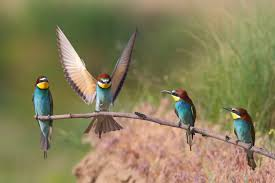
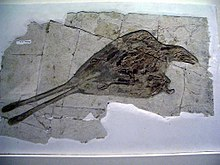
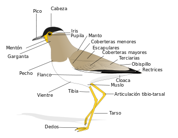
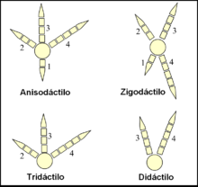
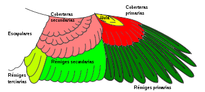

Definicion

Las aves son animales vertebrados, de sangre caliente, que caminan, saltan o se mantienen solo sobre las extremidades
posteriores, mientras que las extremidades anteriores han evolucionado hasta convertirse en alas que, al igual que
muchas otras características anatómicas únicas, les permiten, en la mayoría de los casos, volar, si bien no todas vuelan.
Tienen el cuerpo cubierto de plumas y, las aves sensu stricto, un pico córneo sin dientes. Para reproducirse ponen huevos
que incuban hasta su eclosión.
Su grupo taxonómico se denomina clase Aves (la palabra es latina y está en plural, en singular sería avis) para la sistemática
clásica, pero en la sistemática filogenética actual este clado no tiene rango, y es incluido a su vez sucesivamente dentro
de los clados: Theropoda, Dinosauria, Archosauria, Sauropsida, Tetrapoda, etc., aunque hay más anidamientos intermedios con
denominación.
Las aves se originaron a partir de dinosaurios carnívoros bípedos del Jurásico, hace 150-200 millones de años, y son, de hecho,
los únicos dinosaurios que sobrevivieron a la extinción masiva producida al final del Mesozoico. Su evolución dio lugar, tras
una fuerte radiación, a las más de 10.000 especies actuales (más 153 extintas en tiempos históricos). Las aves son los
tetrápodos más diversos; sin embargo, tienen una gran homogeneidad morfológica en comparación con los mamíferos. Las relaciones
de parentesco de las familias de aves no siempre pueden definirse por morfología, pero con el análisis de ADN comenzaron a
esclarecerse.
Origen y evolución

Las evidencias fósiles y los numerosos análisis biológicos han demostrado que las aves son dinosaurios terópodos. Más específicamente,
son miembros de Maniraptora, un grupo de terópodos que incluyen también, entre otros, a dromeosaurios y oviraptóridos. A medida que
los científicos han descubierto más terópodos no-avianos que están cercanamente relacionados con las aves, la distinción antes
clara entre no-aves y aves se ha vuelto borrosa. Los recientes descubrimientos en la provincia de Liaoning del noreste de China
demuestran que muchos pequeños dinosaurios terópodos tenían plumas, lo que contribuye a esta ambigüedad de límites.
La visión del consenso en la paleontología contemporánea es que las aves son el grupo más cercano a los deinonicosaurios, que incluyen
a dromeosáuridos y troodóntidos. Juntas, estas tres forman el grupo Paraves. El dromaeosaurio basal Microraptor tiene características que
pueden haberle permitido planear o volar. Los deinonicosaurios más basales eran muy pequeños. Esta evidencia eleva la posibilidad de que
el ancestro de todos los paravianos pudiera haber sido arbóreo, o pudiera haber sido capaz de planear.Archaeopteryx, del Jurásico Superior,
es muy conocido como uno de los primeros fósiles transicionales que fueron encontrados y aportó apoyo a la teoría de la evolución a finales
del siglo XIX. Archaeopteryx tiene caracteres claramente reptilianos: dientes, dedos de la mano con garras, y una larga cola similar a la
de lagartos, pero tiene alas finamente preservadas con plumas de vuelo idénticas a las de las aves modernas. No se considera un ancestro
directo de las aves modernas, pero sí el más antiguo y primitivo miembro de Aves o Avialae, y está probablemente muy cercano al ancestro
real. Sin embargo, contradiciendo lo anterior, se ha sugerido por otros autores que Archaeopteryx fue un dinosaurio que no era más cercano
a Aves de lo que fueran otros grupos de dinosaurios, y que Avimimus es un ancestro más plausible de todas las aves que Archaeopteryx.
Teorías alternativas y controversias
Han existido muchas controversias con respecto al origen de las aves. Una de las primeras se encontraba relacionada con el posible origen
de las aves a partir de arcosaurios y no de dinosaurios (estos descienden de los primeros). Dentro de los que se decidían por los dinosaurios
existían también divergencias de criterio en cuanto a si los ancestros más probables eran ornitisquios o saurisquios terópodos. Aunque los
dinosaurios ornitisquios (que en griego significa «con cadera de ave») compartían con las aves modernas la estructura de la cadera, se piensa
que las aves se originaron de dinosaurios saurisquios (gr. «con cadera de lagarto»), y por lo tanto sus caderas evolucionaron independientemente.
De hecho, una estructura de cadera aviana evolucionó en una tercera ocasión entre un grupo de terópodos peculiares conocidos como Therizinosauridae.
Unos pocos científicos todavía sugieren que las aves no son dinosaurios, sino que evolucionaron de arcosaurios primitivos como Longisquama.
Diversificación cretácica de aves primitivas
Las aves se diversificaron en una amplia variedad de formas durante el periodo Cretácico. Muchos grupos retuvieron sus características primitivas,
como alas con garras, y dientes, aunque los dientes se perdieron de forma independiente en algunos grupos de aves, incluidas las aves modernas.
Mientras las formas más primitivas, como Archaeopteryx y Jeholornis, retuvieron la cola larga ósea de sus ancestros, las colas de las aves más
avanzadas se acortaron con la aparición del hueso pigóstilo en el clado Pygostylia.
El primer linaje grande y diverso de aves de cola corta que evolucionó fue Enantiornithes (significa «aves opuestas»), llamado así porque la
construcción de sus huesos del hombro estaba invertida respecto a la de las aves modernas. Enantiornithes ocupó un amplio espectro de nichos ecológicos,
desde sondeadoras en la arena, como las limícolas, y comedoras de pescado, hasta las formas arborícolas y comedoras de semillas. Linajes más avanzados
se especializaron también en comer pescado, como la subclase Ichthyornithes («aves-pez») con apariencia de gaviota.
Un orden de aves marinas del Mesozoico, Hesperornithiformes, se adaptó tan bien a la pesca en ambientes marinos que perdieron la capacidad de volar y
se hicieron primariamente acuáticos. A pesar de su especialización extrema, Hesperornithiformes incluye los parientes más cercanos de las aves modernas.
Anatomía

La anatomía de las aves presenta un plan corporal que exhibe un gran número de adaptaciones inusuales en comparación con otros vertebrados, en su mayor
parte para facilitar el vuelo.
El esqueleto está formado de huesos huecos, pero de estructura resistente, lo que les confiere ligereza a las aves. Estas cavidades óseas están llenas de
aire y conectan con el aparato respiratorio. Los huesos del cráneo están fusionados, sin presentar suturas craneales. Las órbitas son grandes y separadas
por un septo óseo. La columna vertebral de las aves presenta un gran contraste entre las zonas superiores y las inferiores. El número de vértebras cervicales
es muy variable, aunque siempre numeroso y el cuello es especialmente flexible, pero en las vértebras torácicas anteriores la movilidad es reducida, y en todas
las posteriores la movilidad es nula, dado que están fusionadas. Las pocas vértebras posteriores están fusionadas con la pelvis para formar el sinsacro. Las
costillas son aplastadas y el esternón es aquillado para el anclaje de los músculos del vuelo, excepto en los órdenes de aves terrestres no voladoras. Las
extremidades anteriores están modificadas en forma de alas.
Los pies de las aves están clasificados según la disposición de sus dedos en anisodáctilos, zigodáctilos, heterodáctilos, sindáctilos y pamprodáctilos.
La mayor parte de las aves tienen cuatro dedos (aunque hay muchas especies tridáctilas y algunas didáctilas) que se organizan en torno a un ancho y fuerte
metatarso.

Como los reptiles, las aves son primariamente uricotélicos, es decir, sus riñones extraen desechos nitrogenados de su sangre y los excretan como ácido úrico,
en vez de urea o amoníaco, a través de los uréteres hacia el intestino. Las aves no tienen vejiga urinaria o apertura urétrica externa y el ácido úrico se excreta
junto con las heces como desperdicio semisólido. Sin embargo, aves como los colibríes pueden ser facultativamente amoniotélicos, al excretar la mayor parte de los
desechos nitrogenados en forma de amoníaco. Las razones de esto son diversas y no están del todo claras, aunque sus dietas basadas en el néctar, por lo tanto con
grandes aportes de agua, juegan un papel clave. También se debe a que sus metabolismos requieren poco nitrógeno, y a bajas ingestiones de proteínas y sal. Cuando
estas condiciones cambian, se reduce la ingesta de néctar o suben las proteínas y sales obtenidas, estas aves pueden pasar a ser uricotélicas.8990 Pueden excretar
también creatina, en vez de creatinina como los mamíferos. Esta materia, así como la fecal de los intestinos, es expulsada a través de la cloaca del ave. La cloaca
es una abertura multipropósito: por ella se expulsan los desechos, las aves se aparean juntando sus cloacas y las hembras ponen huevos a través de ella. Adicionalmente,
muchas especies regurgitan egagrópilas.
El aparato digestivo de las aves es único, con un buche para almacenamiento de lo ingerido y una molleja que contiene piedras que el ave ha tragado y que sirven para
triturar el alimento para compensar la ausencia de dientes. La mayoría de las aves están adaptadas a una rápida digestión para ayudar al vuelo. Algunas aves migratorias
se han adaptado a usar proteínas de muchas partes del cuerpo, incluidas proteínas de los intestinos, como fuente adicional de energía durante la migración.
Las aves son animales homeotérmicos, es decir, que la temperatura interna se mantiene regulada, por encima de la temperatura exterior, lo que les permite tener un elevado
metabolismo; el plumaje participa en su regulación. La temperatura media interna de las aves adultas es bastante alta, en general entre 40 y 43 °C, con variaciones entre
especies. Algunas Apodiformes tienen temperaturas nocturnas notablemente menores. Ciertas aves, como los reyezuelos, cuando son recién nacidos mantienen la temperatura
ambiental (poiquilotermia), y adquieren la capacidad de regularla pocos días después.
Sentidos

Los sentidos de las aves no deberían diferir básicamente de los mamíferos, pero para algunos de ellos quedan incógnitas: no se sabía muy bien, por ejemplo, cómo logran
orientarse en sus migraciones. Estudios más recientes confirma la presencia de magnetita en el cráneo de las aves, ese mineral ayuda a la orientación ya que funciona como
una brújula.
El sistema visual de las aves suele estar altamente desarrollado. Las rapaces en especial tienen una gran agudeza visual, dos o tres veces mejor que la del ser humano.
La fóvea de una especie del género Buteo posee alrededor de 100 000 conos por mm², frente a los 20 000 en el hombre, cinco veces más. Los ojos de las aves son muy voluminosos.
Por ejemplo, los del estornino tienen un volumen correspondiente a 15 % del volumen craneal (como comparación, en el hombre representan el 1 % de dicho volumen).Las aves
acuáticas tienen lentes flexibles especiales, lo que les permite la acomodación para la visión en el aire y en el agua.81 Algunas especies tienen fóveas duales (por ejemplo:
golondrinas, charranes, martinetes, halcones, colibríes, etc.).
El oído de las aves está bien desarrollado; aunque carece de pabellón auricular, está cubierto por plumas, y en algunas, como en los géneros de búhos Asio, Bubo y Otus,
forman penachos que parecen orejas. Ciertas especies de búho pueden localizar una presa en la oscuridad completa solo con la audición. Sin embargo, la ausencia de orejas
les obliga a realizar rotaciones de la cabeza para percibir los sonidos provenientes de diferentes direcciones. Las salanganas y el guácharo de las cavernas son capaces de
desplazarse en la oscuridad, gracias a que sus oídos están adaptados a la ecolocalización. Al contrario que los mamíferos, el oído medio de las aves tiene un solo huesecillo,
la columela. En el oído interno, la cóclea no es espiralada, sino recta, al contrario que en los mamíferos.
Cromosomas sexuales
El sexo en las aves se determina por cromosomas sexuales, denominados Z y W. Las hembras son heterogaméticas y los machos homogaméticos. Esto significa que la hembra tiene
sus cromosomas sexuales diferentes (ZW) y produce dos tipos de óvulos, lo que determina el sexo del futuro cigoto. En el macho, en cambio, sus cromosomas sexuales son idénticos (ZZ)
y sus espermatozoides, todos portadores de cromosoma Z, no determinan el sexo de la descendencia. Lo contrario ocurre en los mamíferos, donde los cromosomas sexuales, llamados en
este caso X e Y, son diferentes en el macho (XY), y en la hembra son similares (XX).
En todas las especies de aves, el sexo del individuo se determina en la fertilización. Sin embargo, un estudio reciente ha demostrado que en el caso de los talégalos cabecirrojos
la temperatura durante la incubación influye en la relación de sexos en la descendencia; a mayores temperaturas, más proporción de hembras y viceversa; pero esto no se debe a que
la temperatura altere los mecanismos genéticos de determinación del sexo, sino a que con temperaturas extremas de incubación, el desarrollo y mortalidad de los pollos es diferente
según su sexo: a altas temperaturas los machos se desarrollan peor y mueren más, y a bajas temperaturas le ocurre lo mismo a las hembras.
Piel, plumaje y escamas

A diferencia de la piel de los mamíferos, la de las aves es delgada y seca; no posee glándulas sudoríparas; de hecho, la única glándula cutánea de las aves es la glándula uropígea,
situada en la base de la cola, que secreta grasa que el ave esparce por su plumaje con el pico; dicha glándula está especialmente desarrollada en las aves acuáticas, con lo que consiguen
una mayor impermeabilización.
Las plumas son una característica única de las aves. Les permiten volar, proporcionan aislamiento térmico al impedir la circulación del aire que ayuda en la termorregulación, y son usadas
para la exhibición, camuflaje, e identificación.81 Hay varios tipos de plumas, y cada una tiene unas funciones y características determinadas: las plumas de vuelo o rémiges (primarias, secundarias
y terciarias); las rectrices (plumas de la cola, que sirven como timón en el vuelo); las coberteras (que cubren parcialmente las rémiges y también las rectrices); las tectrices (que cubren
todo el cuerpo y lo protegen frente a agentes adversos) y el plumón (que evita la pérdida de calor).